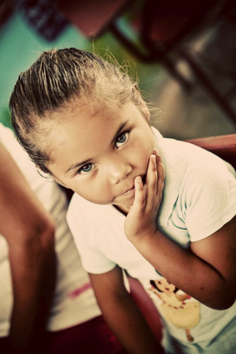

-
Welcome to Corazon De Dios
The Corazon de Dios ministry seeks to help the Honduran people find joy in loving God, their families and fellow man and to improve their basic quality of life. We seek to accomplish this by:
1. Implementing an educational program that enhances the quality of life.
2. Focusing on the spiritual, practical and medical needs.
3. Hosting, developing and equiping teams that help and support individual needs.
-

How you can help us!
- Pray
- Give
- Tell others
- Invite your church, Sunday school, choir, youth ministries, civic club, garden club, etc, to participate
- Help with travel for others
- Plan fund raisers!
- Choose a child or children to support!
'Matthew 25:35' : for I was hungry and you gave me food; I was thirsty and you gave me drink; i was a stranger and you took me in”